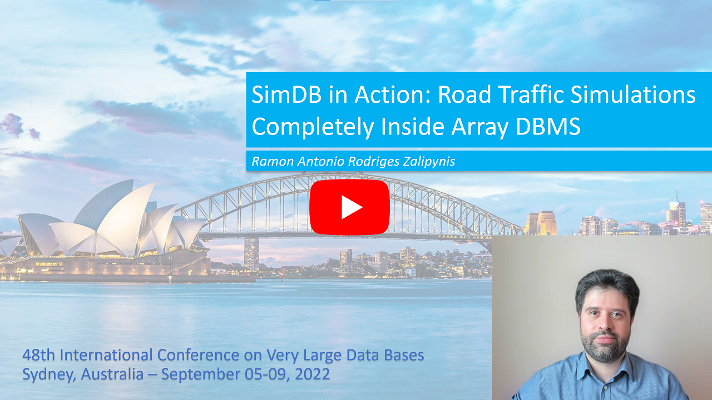

SimDB in ActionArray DBMSs operate on big N-d arrays. Cellular automata (CA) work on a discrete lattice of cells, essentially on N-d arrays.
CA facilitate decision support as they realistically simulate complex phenomena including road trafc, fre spread, and urban growth.
Array DBMSs can bring numerous benefts to the CA domain via a "database approach": powerful parallelization, out-of-the box array
operators, and interoperability to name a few. On the other hand, CA expand the area of Array DBMS applications and open a wide range of R&D opportunities. However, it is not straightforward to make an Array DBMS to support CA simulation workloads.
|
SimDB enables end-to-end CA simulations directly inside the ChronosDB array DBMS via numerous new components and is the frst efort to run CA simulations entirely inside an Array DBMS. We also developed a new desktop application specially designed to showcase SimDB. The application features interactive components to graphically reveal the insights of SimDB internals. Moreover, our application provides a convenient GUI to comprehensively investigate how end-to-end road traffic simulations run entirely inside an Array DBMS.  |